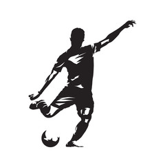

Sobre mim
Me chamo Michel Alisson Barbosa da Silva. Sou brasileiro, natural de Araguari, Minas Gerais.
Tenho 26 anos, casado, engenheiro de produção e futuro licenciado em computação.
Conto com 8 anos de experiência profissional, sendo eles 5 anos atuando diretamente com planejamento e controle de manutenção, 2 anos atuando
em toda a cadeia de compras de suprimentos de manutenção e produção metalúrgica e 1 ano atuando no desenvolvimento de projetos estruturantes
voltando à gestão de manutenção.
Sempre tive o desejo de conhecer melhor o mundo da tecnologia a fundo porém, somente em meados de Julho/21 consegui focar e traçar como meta
desde então, o aprendizado e quem sabe em um futuro próximo, transacionar de carreira profissional.
Atualmente estou empenhado em participar da formação ONE (Oracle Next Education) em parceria com a Alura e também participado de bootcamps
me outra plataforma de ensino, DIO.

Skills
Html 5
JavaScript
CSS
Java
Spring


Hobbies
Cozinhar
Fazer trilha de bike

Jogar e assistir futebol
Pescar
Estudar Programação


Formação Acadêmica
- UNA
- IFTM
- Formação ONE